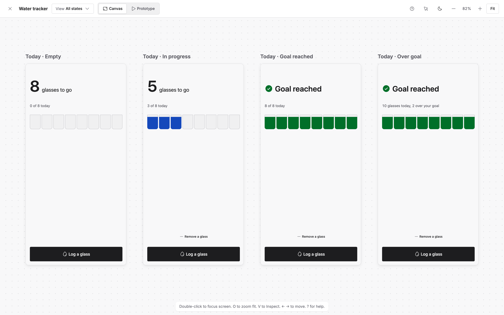

The open-source prototype kit for your coding agent.
Click through your idea before you build the app. Runs locally, every screen and state included.
Follow https://protopass.dev/install.md to prototype: <your idea>
Paste it into your coding agent, with your idea at the end. Tested with Claude Code and Codex on macOS. Needs Node 20 or later, no account. Read install.md before your agent does.
